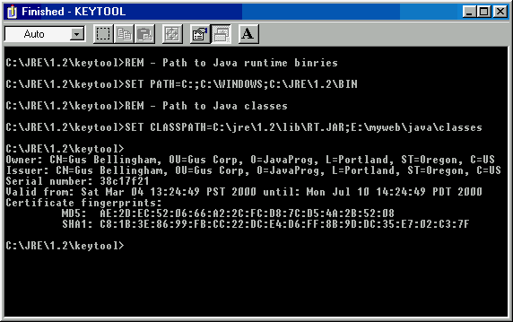
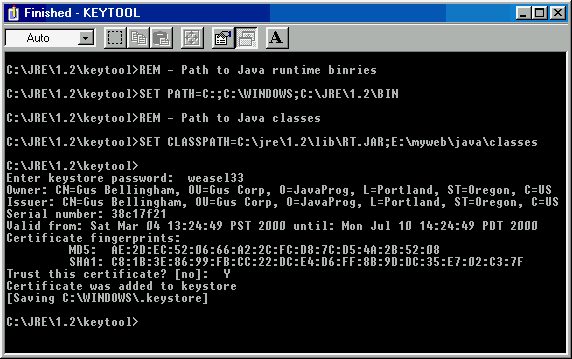
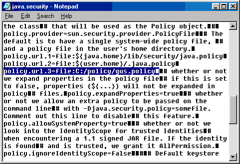

#1. Invoke keytool
at a command line, be sure to set the PATH
environment variable to include the Java runtime binaries.
Change to the directory that contains the downloaded certificate file,
and invoke keytool with these parameters:
keytool -printcert -file guscert.cer
Make sure that the MD5 signature printed by
this command, reads like the output shown at right. |
 |
| #2. If the signature
is the same, you may import my public-key certificate and trust my
signed java code with the following command:
keytool -import -alias gus -file
guscert.cer
The display shows that I chose a password to
protect my keystore, and that the certificate
was successfully imported and trusted. |
 |
#3. Now that you
have an entity called gus in your keystore file, you can grant the
entity 'gus' some security permissions,
using the java policytool.
Find the program called policytool.exe
in the Java runtime libraries.
Use it to create a new policy file that allows code signedby
gus the FilePermission on target
<<ALL FILES>>, the action
read.
Or you can copy the contents of this file: gus.policy into a text file called C:\policy\gus.policy
on your computer.
You can see, that this policy grants code signed by gus, permissions
to read files only. The applet also need
permission to read the Java system property called user.home,
and to display a window without a warning banner across the bottom.
It is probably NEVER a good idea to grant
policies that allow other peoples' code, to write to or execute files
on your machine!
There are 3 alternative ways to make sure the
Java Virtual Machine, loads the new security policy at runtime (see
below) ! |
#4a
To permanently add a new policy file, to the default policy files,
that are loaded by the Java runtime, you have to manually edit the
java.security properties file !
Use the Finder on your computer to find this file, it is usually in
the {javahome}\lib\security folder.
Make a backup copy before you edit it. Tip! After
making any policy changes, you need to reboot your machine for some
reason, before the new permissions in the policy file will take
effect!
Disabling the java runtime cache has no effect, and is NOT recommended. |
 |
| The number in red, is important, it must be in contiguous
ascending sequence. |
You can open it in notepad, and look for the following
entries :
policy.url.1={java.home}\lib\security\java.policy
policy.url.2={user.home}\.java.policy
Add an entry pointing to your new policy file:
policy.url.3={user.home}\.my.policy |
| |
#4b
To add a new policy file to be loaded just once when running an
Application, use the -D system.property=value
option of the java runtime command like this :
>java -Djava.security.policy=file:/C:/policy/new.policy Application1
use a double equals sign, to replace
the default policy files for this run.
Note: You will need to make sure that a SecurityManager
is loaded at runtime (Java applications don't generally need a SecurityManager).
You can do this with the command line option :
-Djava.security.manager
or the following code in your application initialization method.
if (System.getSecurityManager() == null) {
System.setSecurityManager(new SecurityManager());
} |
#4c
To add a new policy file to be loaded when running an Applet in the
appletviewer utility, use the command line option -J-D
system.property=value
>appletviewer -J-Djava.security.policy=file:/C:/policy/new.policy Applet1 |
|